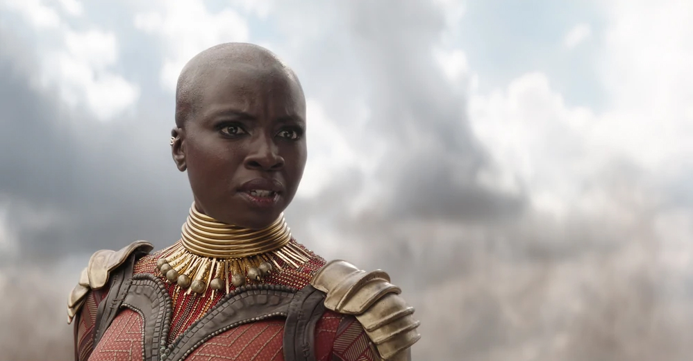

Danai Gurira sebagai Okoye, Okoye melayani Black Panther sebagai pengawal pribadi dan bangsa Wakanda sebagai pembawa obor tradisi dan kebajikan. Okoye sama mematikannya seperti dia bijak, dan berdiri sebagai salah satu sekutu dan sahabat paling tepercaya dari T'Achalla. Loyalis dan pejuang pejuang Wakandan yang bangga, Okoye, memimpin sekelompok elit pengawal wanita yang dikenal sebagai Dora Milaje, yang bertugas atas kebijaksanaan takhta dan untuk kehormatan negaranya.
Okoye berhasil bangkit sebagai pejuang terhebat di antara jajaran pejuang Wakandan berpengalaman dan luar biasa lainnya untuk menjadi kepala kontingen pengawal yang semuanya perempuan yang dikenal sebagai Dora Milaje. Sebelum melayani Raja T'Challa, dia melayani ayahnya, T'Chaka.Okoye adalah seniman bela diri yang sangat terampil dan master staf dan pertempuran tombak. Sebagai senjata utamanya, ia membawa tombak vibranium khusus, yang mampu runtuh menjadi pegangan untuk penyembunyian cepat. Ia cukup kuat untuk menembus baju besi dan menghentikan kendaraan yang bergerak jika ditanam di tanah. Itu juga dapat memancarkan muatan listrik dan berinteraksi dengan teknologi Wakandan lainnya.
Setiap musuh Wakanda adalah musuh Okoye, yang terikat kehormatan untuk membela negaranya dan rakyatnya. Mulai dari musuh lama Wakandan Ulysses Klaue dan orang-orangnya, hingga perampas Erik "Killmonger" Stevens, setelah jelas dia bukan Raja yang berhak dan bertindak melawan niat T'Challa dan Wakanda. Okoye juga berdiri dengan T'Challa dan orang-orangnya melawan pasukan invasi Thanos, melawan Proxima Midnight di tengah-tengah pertempuran.
Okoye dekat dengan seluruh Keluarga Kerajaan Wakanda, termasuk Raja T'Challa, ibunya, Ramonda, dan saudara perempuannya, Shuri, serta objek kasih sayang T'Challa, Nakia. Dia juga berbagi ikatan dekat dengan saudara perempuannya Dora Milaje, termasuk Ayo. Dia mencintai suaminya, Wakabi, tetapi tidak akan ragu untuk melakukan apa yang dia yakini benar dan menentangnya ketika dia berpihak pada orang luar yang menentang Raja sejatinya.
Gurira mengatakan bahwa keterampilan bertarung yang ia pelajari saat memerankan Michonne sangat membantu melengkapi perannya sebagai Okoye, tetapi ia juga mengatakan bahwa pasukan Dora Milaje adalah secret service yang merangkap sebagai intel dan juga sebagai petarung. Ia juga menjelaskan bahwa walaupun karakter Okoye itu tenang, "ia juga mempunyai selera humor yang tak terduga", dan hatinya hanya ada untuk negaranya dan orang-orangnya. Setiap hari rambut Gurira selalu dicukur agar tato dapat diaplikasikan di kepalanya, serta dibutuhkan waktu selama dua setengah sampai tiga setengah jam untuk mengaplikasikan tato tersebut.